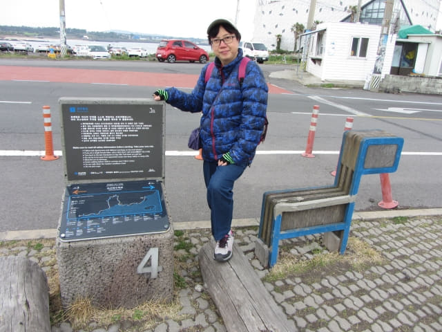

沿表善海灘海邊的偶來3號小路一直走, 很輕鬆的來到偶來3號小路的終點站, 也是偶來4號小路的起點站。接著我們會沿偶來4號小路走到韓劇 IRIS 拍攝場地的白色燈塔(등대), 途中會經過表善里漁港及很多有趣的地方。
偶來3號小路終點 及偶來4號小路的起點, 最大特徵是可愛的甘穂標誌和用象徵濟州島的「玄武岩」製成的石碑。

石碑上有偶來小路的路線圖。
在這裡又收了兩個蓋章: 偶來3號小路終點蓋章及偶來4號小路起點蓋章。
接著沿偶來4號小路走。這一段是馬路, 兩旁都是海鮮餐館。
在韓國經常看到的斑馬魚, 都是刺身專用的, 我們也吃了很多次, 肉質都頗鮮甜的。
接著穿過房屋間的小巷, 按偶來標誌走進一個漁港旁的公園。

表善里漁港公園中有趣的魚雕像, 好像是我們平常吃的「沙猛」。
表善里漁港 (표선리어촌계)
穿過公園, 繼續按偶來標誌的方向走, 又來到海邊的地方, 已經到達表善里漁港。
表善里漁港停泊了很多漁船。
望望右邊, 黑色的石灘上有一個很細小的白色燈塔。
表善漁港防波堤 (표선방파제)
再望望左邊, 有一道長長的防波堤 – 表善防波堤 (표선방파제) 伸延至海中, 長堤的盡頭處有一個白色燈塔, 景色相當優美, 便打算先走去那裡看看, 回頭才遊覽石灘上的小燈塔。